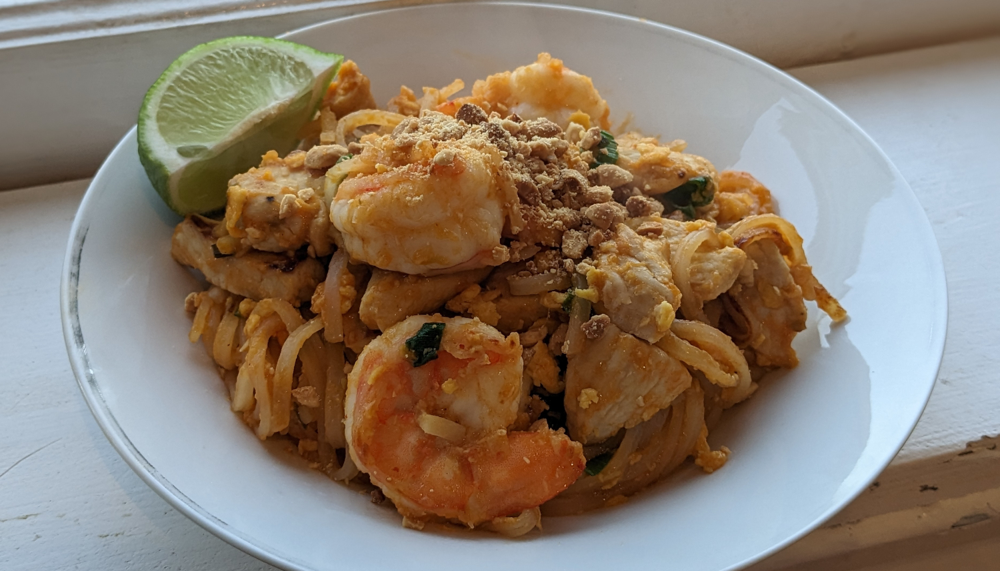

Shrimp Pad Thai

Author: New York Times Cooking |
Cooked: February 18, 2023
Yields: 4 Servings | Prep Time: 15 Minutes | Cook Time: 30 Minutes
Ingredients
- 8 oz stir-fry rice noodles
- 1 lb large shrimp
- 1/4 tsp salt
- 1/4 minced garlic
- 2 Tbs minced shallot
- 4 oz pad thai sauce (or make your own -- see note)
- 4 large eggs, beaten
- 2 cups bean sprouts
- 1/2 c. scallions cut into 1" lengths
- 1 c. hot tap water
- 3 Tbs vegetable oil
- Chopped peanuts
- Lime, cut into wedges
Directions
- Bring a pot of water to a boil and cook the noodles for 4-6 minutes until tender but firm. Rinse the noodles under cold water and drain.
- Peel shrimp and remove the tails. If shrimp were frozen and are a bit wet, pat them dry with paper towels.
- Season shrimp in a bowl with salt and add in the minced garlic and shallot.
- Line up ingredients in the order they'll be cooked: Shrimp bowl, noodles sauce, eggs. bean sprouts, chives, and water. You NEED to do this as everything will come together very quickly.
- Heat the vegetable oil in a wok over medium-high heat. Reduce to medium heat and add the contents of the shrimp bowl and cook until the shrimp are nearly pink, 2-3 minutes. Be sure to adjust the flame so that the ingredients are sizzling and not popping or scorching.
- Add the noodles and raise heat to maximum, tossing the contents of the wok or using tongs if you're scared like me. When noodles start sizzling, add half the sauce and 1 Tbs of hot water and toss until cooked through.
- Check noodles for seasoning. Add more sauce or water if necessary.
- Push noodles to one side of the wok. Add a bit of oil to the other side and add the eggs, scrambling and stirring until cooked through and just dry. Combine the noodles and the eggs.
- Add in bean sprouts and scallions, stir to combine, and remove from heat.
- Serve with peanuts, lime wedges, and optional chile powder.
Additional Notes
- Rumor has it that instead of cooking the noodles, you can let them sit in a large bowl filled with hot tap water for 20-30 minutes until white, limp, and almost soft to the bite. Then drain and fluff and use the same way as the cooked noodles.
- Instead of the pad thai sauce, you can use 1/3 c. fish sauce, 1/3 c. tamarind liquid or concentrate, and 1/3 c. coconut sugar or dark brown sugar. Bring these to a simmer over medium heat, stirring often, and cook until the sugar is dissolved (3-4 minutes).